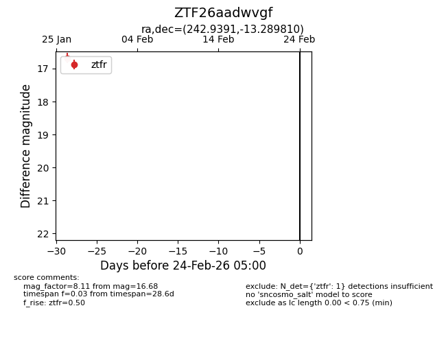
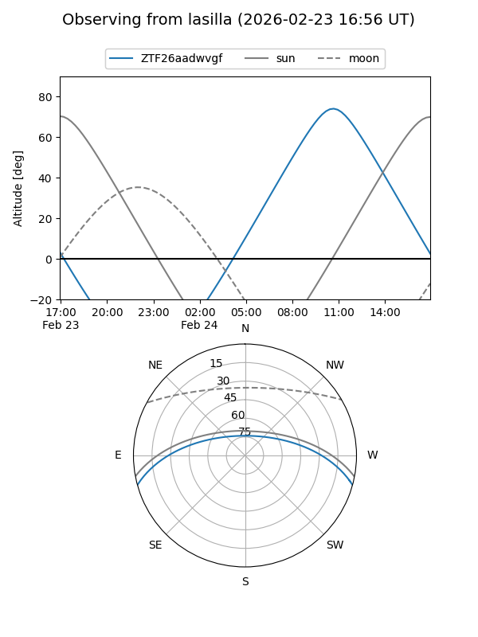
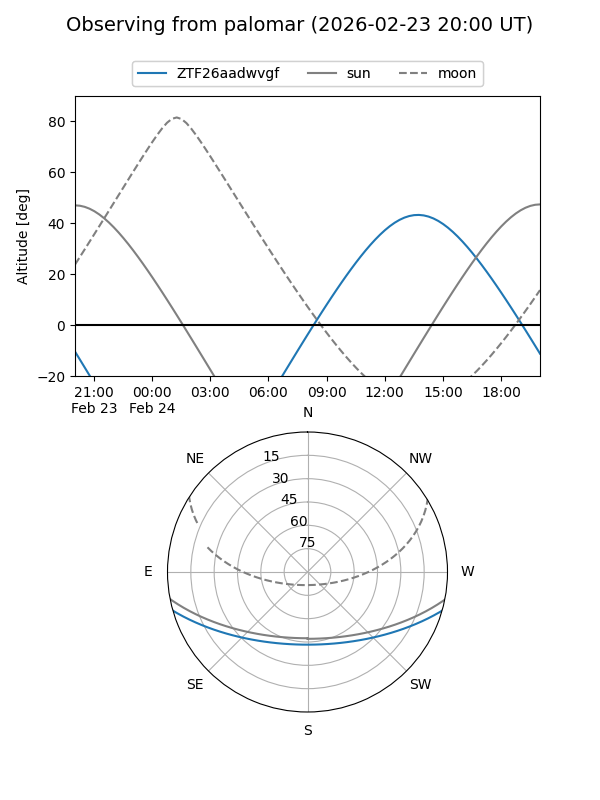

ZTF26aadwvgf
Target ZTF26aadwvgf at 2026-01-26 14:26
Aliases and brokers:
FINK: link
Lasair: link
ALeRCE: link
alt names
ZTF26aadwvgf (ztf,fink_ztf)
Coordinates:
equatorial (ra, dec) = 242.9391,-13.28981
equatorial (HMS+DMS) = 16:11:45.39,-13:17:23.32
galactic (l, b) = (359.6816,+26.80851)
Flags:
Photometry:
last ztfr=16.68
1 ztfr detections
Lightcurve

Visibility


Additional plots